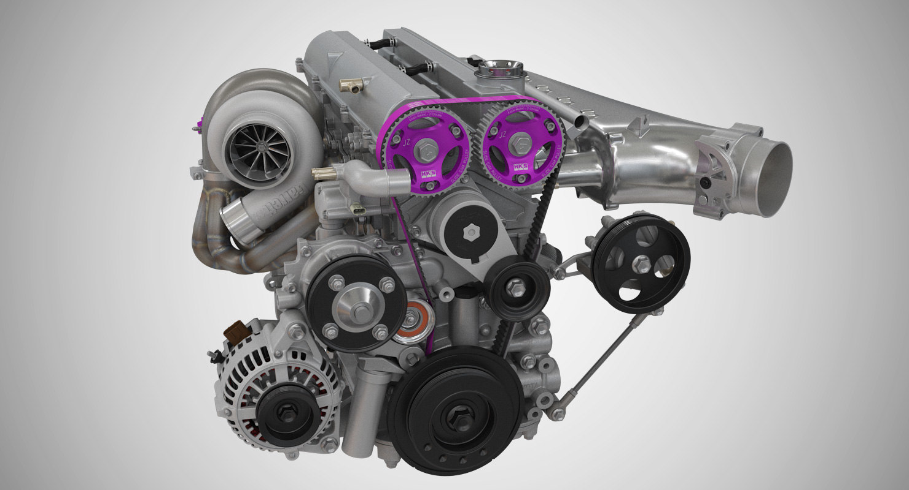
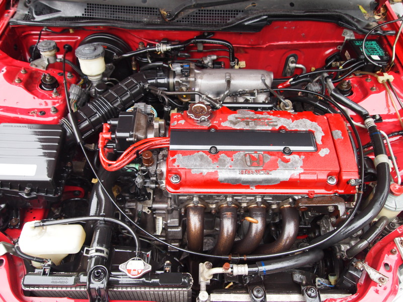
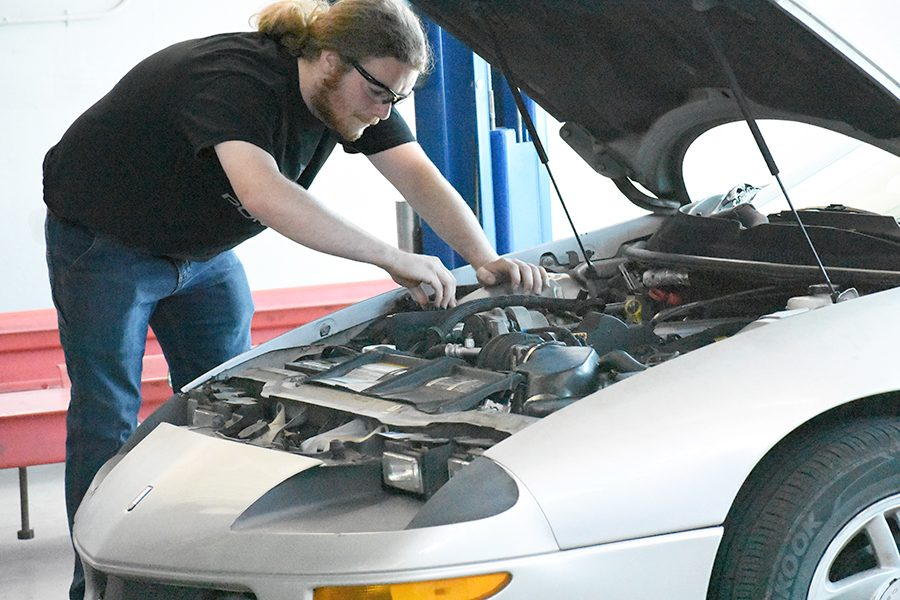
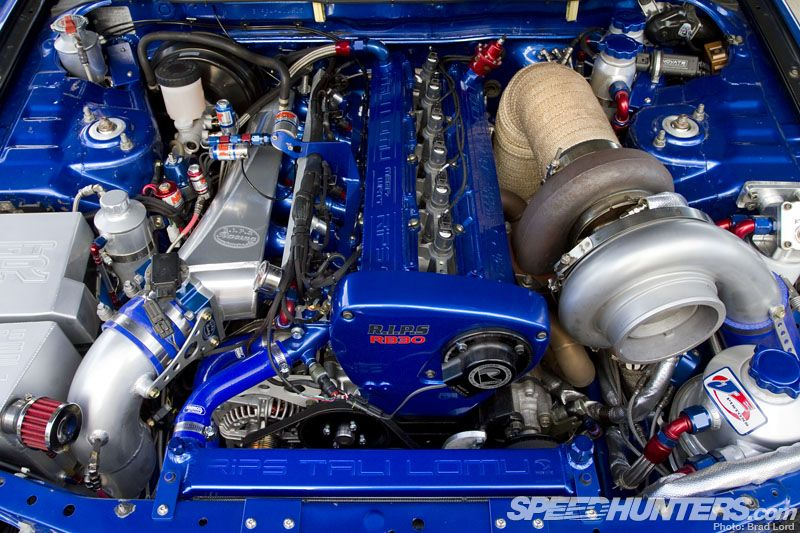

Mecanic auto
Un mecanic auto (tehnician auto in cea mai mare parte a Americii de Nord, tehnician pentru vehicule usoare in engleza britanica si mecanic auto in engleza australiana) este un mecanic cu o varietate de marci auto sau fie intr-o zona specifica, fie intr-o marca specifica de automobile. In repararea masinilor, rolul lor principal este de a diagnostica problema cu exactitate si rapiditate. Deseori trebuie sa citeze preturile pentru clientii lor inainte de inceperea lucrarilor sau dupa demontare partiala pentru inspectie. Slujba lor poate implica repararea unei anumite parti sau inlocuirea uneia sau a mai multor piese sub forma de ansambluri. Intretinerea vehiculelor de baza este o parte fundamentala a activitatii unui mecanic in tarile moderne industrializate, in timp ce in altele acestea sunt consultate doar atunci când un vehicul prezinta deja semne de defectiune. Intretinerea preventiva este, de asemenea, o parte fundamentala a activitatii unui mecanic, dar acest lucru nu este posibil in cazul vehiculelor care nu sunt intretinute in mod regulat de catre un mecanic. Un aspect neinteles al intretinerii preventive este inlocuirea programata a diferitelor piese, care apare inainte de esecul de a evita daunele mult mai scumpe. Deoarece acest lucru inseamna ca piesele sunt înlocuite inainte ca orice problema sa fie observata, multi proprietari de vehicule nu vor intelege de ce este necesara cheltuiala. Odata cu avansarea rapida a tehnologiei, munca mecanicului a evoluat de la pur mecanic, pana la tehnologia electronica. Deoarece vehiculele detin astazi sisteme electronice si electronice complexe, mecanicii trebuie sa aiba o baza mai larga de cunostinte decat in trecut. Datorita naturii din ce in ce mai labirintica a tehnologiei care este acum încorporata in automobile, majoritatea dealerilor și atelierelor independente furnizeaza acum computere de diagnostic sofisticate fiecarui tehnician, fara de care acestea nu ar putea sa diagnostice sau sa repare un vehicul.
Odata cu avansarea rapida a tehnologiei, munca mecanicului a evoluat de la mecanicul pur la tehnologia electronica. Intrucat vehiculele au acum sisteme electronice si electronice complexe, mecanica trebuie sa aiba o baza de cunostinte mai larga decat in trecut. Datorita naturii din ce in ce mai labirintica a tehnologiei care este acum incorporata in masini, majoritatea dealerilor si atelierelor independente ofera acum computere de diagnostic sofisticate fiecarui tehnician, fara de care un vehicul nu ar putea fi diagnosticat sau reparat.
Click aici pentru a invata cum sa instalezi un scaun
Click aici pentru a invata cum sa iti repari evacuarea

In Statele Unite, multe programe si scoli ofera pregatire pentru cei interesati sa urmareasca competente ca mecanici auto sau tehnicieni. Domeniile de pregatire includ reparatia si întretinerea automobilelor, repararea coliziunilor, vopsirea si restaurarea, electronica, sistemele de climatizare si incalzire, precum si mecanica pentru camioane si diesel. Fundatia Nationala pentru Tehnici pentru Autovehicule (NATEF) este responsabila de evaluarea programelor de formare a tehnicienilor in conformitate cu standardele elaborate de industria auto. NATEF acredita programe in patru categorii diferite: automobile, coliziune, camioane (tehnologie diesel) si combustibili alternativi. NATEF listeaza scolile secundare si postliceale cu programe acreditate pe site-ul lor web.
Uni mecanici sunt certificat ASE, care este o metoda standardizata de testare a abilitatilor si nivelului de cunostinte. Desi prin lege nu este necesar ca un mecanic sa fie certificat, unele companii angajeaza sau promoveaza doar angajatii care au trecut testele ASE. Tehnologia folosita în automobile se schimba foarte repede, iar mecanicul trebuie sa fie pregatit pentru a invata aceste noi tehnologii si sisteme. Mecanicul auto are o munca solicitanta fizic, deseori expusa la temperaturi extreme, ridicand obiecte grele si ramanand in pozitii incomode pentru perioade indelungate. De asemenea, acestea se pot ocupa de expunerea la substante chimice toxice.
Internetul este aplicat pe teren din ce în ce mai des, mecanicii oferind consultanță online. Mecanicii înșiși folosesc în mod regulat internetul pentru informații pentru a-i ajuta în diagnosticarea sau repararea vehiculelor. O resursă populară pentru acest tip de cercetare este site-ul video YouTube, unde profesioniști și bricolaj.
De obicei, un mecanic lucrează de la atelierul în care mecanicul (bine echipat) are acces la un ascensor pentru a accesa zonele dificil de accesat atunci când mașina este pe pământ. Pe lângă mecanicul legat de atelier, există mecanici mobile precum cele ale Asociației Automobilelor din Marea Britanie (AA), care permit proprietarului autoturismului să primească asistență, fără ca automobilul să fie neapărat adus într-un garaj.
Un mecanic poate opta să se angajeze în alte cariere legate de domeniul său. Predarea cursurilor de comerț auto, de exemplu, este realizată aproape în întregime de mecanici calificați în multe țări.
De obicei, un mecanic lucrează de la atelierul în care mecanicul (bine echipat) are acces la un ascensor pentru a accesa zonele dificil de accesat atunci când mașina este pe pământ. Pe lângă mecanicul legat de atelier, există mecanici mobile precum cele ale Asociației Automobilelor din Marea Britanie (AA), care permit proprietarului autoturismului să primească asistență, fără ca automobilul să fie neapărat adus într-un garaj.
Repararea caroseriei automate implică mai puține lucrări cu părțile uleioase și grase ale vehiculelor, dar implică expunerea la praful de particule provenit din șlefuirea caroseriei și vaporii chimici potențial toxici din vopsea și produse aferente De asemenea, adesea, vânzătorii și dealerii trebuie să dobândească o cunoaștere aprofundată a automobilelor, iar unele mecanici au succes în aceste roluri din cauza cunoștințelor lor. Mecanica auto trebuie, de asemenea, să rămână la curent cu toate companiile auto de top, precum și cu mașinile noi de lansare. Unul trebuie să studieze continuu pe motoarele noi de tehnologie și sistemele lor de lucru.
Repararea caroseriei automate implică mai puține lucrări cu părțile uleioase și grase ale vehiculelor, dar implică expunerea la praful de particule provenit din șlefuirea caroseriei și vaporii chimici potențial toxici din vopsea și produse aferente De asemenea, adesea, vânzătorii și dealerii trebuie să dobândească o cunoaștere aprofundată a automobilelor, iar unele mecanici au succes în aceste roluri din cauza cunoștințelor lor. Mecanica auto trebuie, de asemenea, să rămână la curent cu toate companiile auto de top, precum și cu mașinile noi de lansare. Unul trebuie să studieze continuu pe motoarele noi de tehnologie și sistemele lor de lucru.
Tarile nordiceAcest site apartine lui: Milesan Vlad